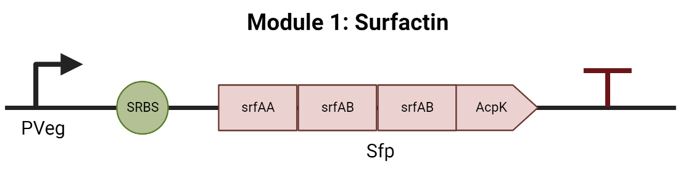
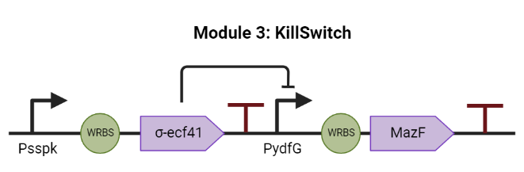

Protocols
To fabricate our product “BerryVax”, a phytovaccine with preventive and corrective function against Fusarium oxysporum in berry crops, it is necessary to establish a series of protocols so we can make sure that the procedure inside the laboratory is efficient and effective.
BerryVax will be a modified strain of Bacillus where we will insert a genetic circuit we created. In order to get the genetic circuit inside the bacteria the easiest way would be using a vector, and pUC19 is part of the New England BioLabs kit we are planning to use. This plasmid cannot be used in Bacillus, therefore, we decided to first insert our genetic circuit in pUC19 and the plasmid will be inserted in a strain of Escherichia coli, a bacterium where pUC19 can be used. Here we will verify that our genetic circuit works as we wish it does.
To enhance our biocontainment strategy, we decided to use integrative vectors to avoid horizontal transfer by using plasmids. The protocols will be handled the same way to insert the pUC19 in the E. coli and, pDG1730 in the B. subtilis and B. amyloliquefaciens with the possibility of changes once the results in the E. coli are analyzed. We will work with both strains of Bacillus in the first stage to analyze which of these two give out the best results, but the protocols just mention B. subtilis to not cause confusion.
The strains of B. subtilis, B. amyloliquefaciens and E. coli that we intend to use for our project are already in the reservoir of our university and are part of the whitelist.
Note: Before every procedure is done, it must be controlled that the needed reactants are in existence and in optimal conditions as well as the equipment and material needed. Also, all the solutions must be prepared according to the quantities that will be needed to avoid the lack or overproduction of these.
Genetic circuit formation
A genetic circuit was designed to follow the process of biocontrol we desired to, and it is divided in three parts. The first part is the surfactin production, that as we know the B. subtilis produces surfactin naturally but in our product, we intend to overexpress the surfactin producer gene so it can help prevent the growth of the pathogenic fungi (M M Nakano, 1988).
The second part is the fungicide, this will work as a sensor, when it detects the presence of the fusaric acid, produced by F. oxysporum, the bacteria will produce chitinase to attack the fungi being able to control the plague. Chitinase degrades chitin which is a long chain polymer that can be found in the cell walls of the fungi (Yuriy Mihaylov Stoykov, 2014).

The third and last part is the kill switch which is important because it works as a biocontainment mechanism. A σ factor (Psspk) and a target promoter are found in another strain of Bacillus which can be taken and introduced in our modified bacteria, this factor is produced late in the life of the microorganism and is activated before the spores begin to generate. The genetic circuit we designed will subsequently activate a toxin once the factor is activated, causing the death of the bacteria (LMU, 2012).
Competence and Transformation
The advantage of working with B. subtilis is that this type of bacteria has natural competence making it easier procedure. First, the active inoculum must be added in a flask with 20ml of SPl medium which is prepared with Spizizen salts, tryptone, yeast extract and glucose, with the goal of making the bacteria overpass the exponential growth. The bacteria will be incubated at 37°C and 150 rpm from which samples will be taken constantly so it is possible to track the growth and through optical density identify the moment when they have reached the desired growth. Once the bacteria overpass the exponential growth, 0.5ml of this culture will be added in a flask with 90ml of SPll, this second solution has Spizizen salts, CaCl2, MgCl2 and glucose, that salts will help the natural competence to obtain better results. Finally, it will be incubated under the same conditions for 90 min (iGEM Team Brno, 2020).
To stop the growth, the flask must be placed in ice and centrifuge the culture at 3000g and 4°C for 5 min, afterwards, decant the supernatant in a sterile flask from which 9ml will be taken and used to resuspend the pellet. Add 1ml of glycerol (87%) to obtain a final volume of 10ml which can be separated in 0.5ml aliquots and store them in a -80°C freezer (iGEM Team Brno, 2020).
To transform the bacteria the samples must be thawed and reach 37°C, when they have reached the desired temperature, add 100ul of competent cells and 100ng of the plasmids inside an Eppendorf tube and incubate it at 37°C and 150rpm for 60 min (iGEM Team Brno, 2020).
Quantification of the amount of surfactin produced
An easy and efficient way of knowing the amount of surfactin produced by our modified bacteria is by purifying it. First it is necessary to resuspend the pellets of the supernatant which contain the protein of interest with 1ml of distilled water and 2uL NaOH 2M, then filter the solution with a Centricon Centrifugal Filter of 10kDa at 5000g until the retentate has reached its minimum amount. Dilute the retentate with 50% methanol and filter again, let the filtrate dry at 80°C for 24h and finally weight the samples and do the dry weight math to obtain the amount if surfactin produced (FCB-UANL, 2020).
Verification of the fusaric acid sensor and inhibition of the fungal growth
As mentioned previously, part of the genetic circuit is a biosensor which can detect the fusaric acid and by doing this it will overexpress the surfactin gene overproducing it, the great amount of surfactin will be enough to attack the F. oxysporum.
What we intend to do here is place the GFP gene just before the surfactin gene, this way, the GFP gene will be activated when the surfactin gene detects the presence of the fusaric acid. To verify this statement, we would need to grow our modified B. subtilis in a Petri dish with fusaric acid in the media, if everything works as expected, we should be able to see the GFP indicating that the fusaric acid sensor is working in our modified bacteria.
To verify the inhibition a simple but effective way would be growing our modified B. subtilis together with the F. oxysporum and see if these in fact, do not let the fungi grow making the bacteria the dominant species.
Verification of the kill switch functionality
Having a kill switch is very important because this gives us the security that our B. subtilis will not stay for a long period of time in the soil in case it is not giving us the desired results. We inserted a toxin as part of the genetic circuit which will be produced after a period of time has passed. To verify the kill switch, we need to change the toxin MazF for a GFP and grow the bacteria in a liquid broth making constant samplings in the spectrophotometer, with this we will be able to graph the absorbance in the period of time programed for the bacteria and this way we can see if the toxin gene would have been active having a visual measurement (LMU, 2012).
Helpful information
We know that working in the lab can be hard and confusing, and even more when we are working with something new such as synthetic biology. Because of this we added some links that can be helpful, these show troubleshooting guides and FAQs for each of the protocols described above.
Competent cells
Transformation
Centrifugal filter
GFP expression
References
FCB-UANL, iGEM. (2020). SYNBIOFOAM. Retrieved from https://2020.igem.org/Team:FCB-UANL/Engineering#subtitle-sp
iGEM Team Brno. (2020). Handbook - How to handle Bacillus subtilis. Retrieved 2022, from https://static.igem.org/mediawiki/2020/5/50/T--Brno_Czech_Republic--Contribution_Handbook.pdf
LMU. (2012). Beadzillus. Retrieved 2022, from https://2012.igem.org/Team:LMU-Munich/Germination_Stop
M M Nakano, M. A. (1988). Identification of a genetic locus required for biosynthesis of the lipopeptide antibiotic surfactin in Bacillus subtilis. Retrieved 2022, from https://pubmed.ncbi.nlm.nih.gov/2848009/
Yuriy Mihaylov Stoykov, A. I. (2014). Chitinase biotechnology: Production, purification, and application. Retrieved 2022, from https://onlinelibrary.wiley.com/doi/abs/10.1002/elsc.201400173